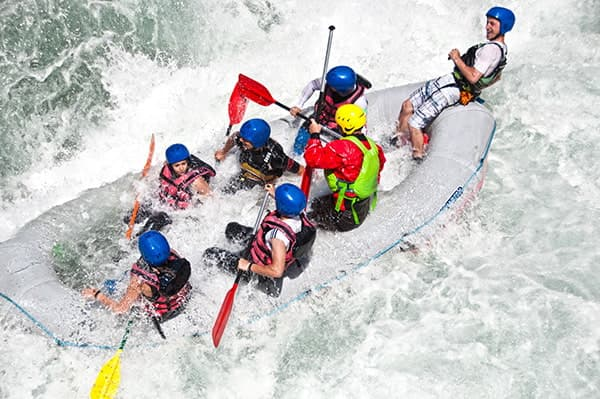
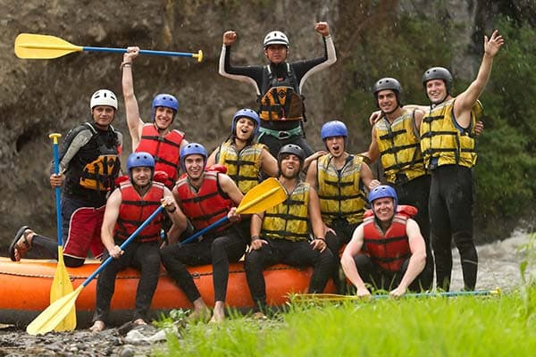

Nossos Passeios e Aventuras
Pronto para Viver a Emoção?
Tire suas dúvidas ou faça já a sua reserva diretamente com a nossa equipe.
Fale Conosco e ReserveDestaques dos Nossos Roteiros

Descida eletrizante pelas principais corredeiras do rio, ideal para quem busca adrenalina pura e trabalho em equipe.

Explore trechos cercados por paisagens exuberantes com paradas estratégicas para banho e mergulho na natureza.

Um roteiro moderado e totalmente seguro, focado na diversão em família e na contemplação da fauna e flora local.
Tabela Geral de Passeios
| Nome do Passeio | Nível de Intensidade | Duração Média | Público Recomendado |
|---|---|---|---|
| Corredeiras do Iguaçu | Alto (Adrenalina) | 2 horas | Aventureiros e jovens (a partir de 14 anos) |
| Aventura com Quedas | Moderado | 3 horas | Pessoas ativas e amantes de banhos de rio |
| Expedição Família | Leve / Seguro | 1h30 | Famílias com crianças e iniciantes em geral |